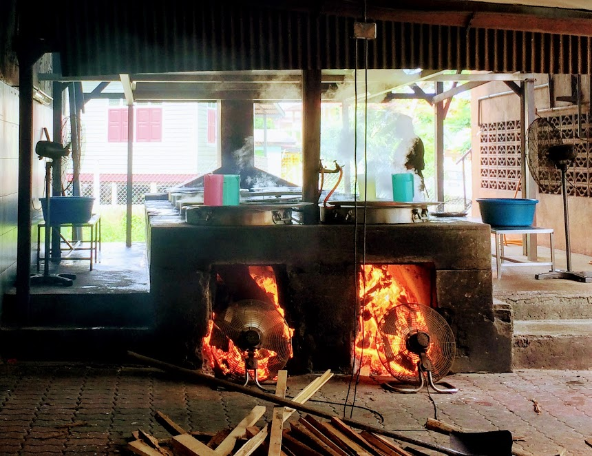
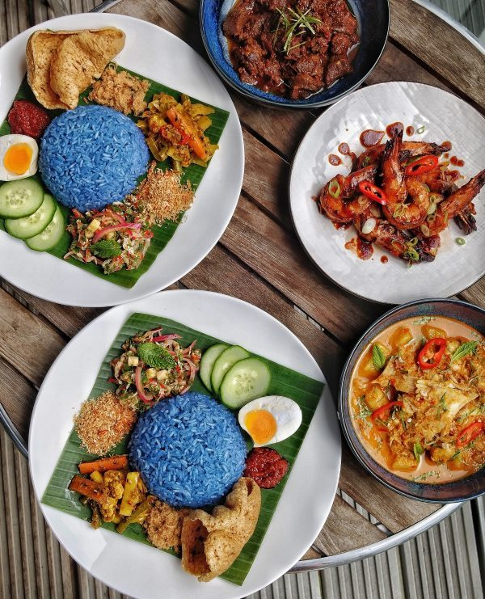
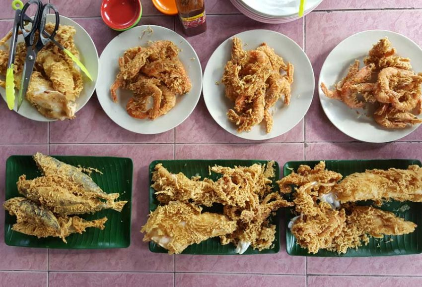
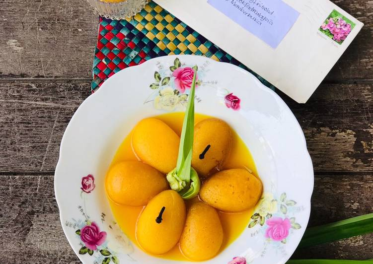
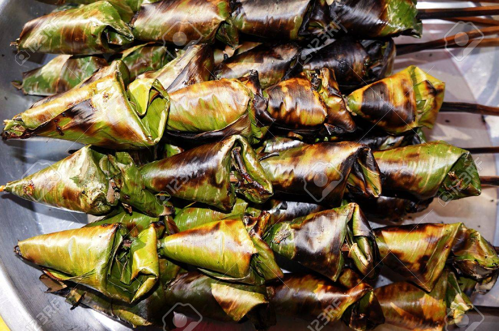

<!DOCTYPE html>
<html>
<head>
	<title>food</title>
	<link rel= "stylesheet" href="style.css">
</head>

<html>
<head>
<style> 
body {
  background-image: url("sea.jpg");
  background-color: #cccccc;
  
}

</style>
</head>
</body>
</html>
	
	
<body>
<center><h1>
Let's Visit Kuala Terengganu</center></h1>

<center>
<font face="algerian" size= "55px" color= "Black">'Here Are The Best Food You Should Try In Kuala Terengganu'
</center></font>
<center>
<p>Kuala Terengganu is the capital city of the state of Terengganu in Malaysia. It is situated on the East Coast of Peninsula Malaysia and is a city with a strong Malay-Muslim cultural influence. Apart from its laid back and traditional lifestyle, Terengganu is also a food heaven. So, let’s look at some of the eateries there, 5 places to eat in Terengganu, specifically Kuala Terengganu, if you plan to visit the city.
</p>
<hr>
<br>
	
<center>
<h2>Dynar Lekor : Traditional Way Of Cooking</h2>

<p>Dynar Lekor, or some called as BTB is another spot to go if you plan to eat in Kuala Terengganu. Why? First of all, there are many choices of keropok lekor – boiled, original, cheese, cheezy poppers etc. You will easily get confused and might end up order everything. The boiled keropok lekor is also a must-try since they are freshly boiled and it tastes so good especially when eaten hot. Lastly, they use traditional way of cooking using firewood and where else can you find this? As keropok lekor is considered as the national snack of Terengganu, a visit here as one of the 5 places to eat in Terengganu is a must!
<center>
<p>Dynar Lekor or Keropok Lekor BTB is situated at Lot 8292 Seberang Takir Darul Iman., Kampung Bukit Tok Beng, 21300 Kuala Terengganu, Terengganu. Just Waze Dynar Lekor or BTB to get here. The boiled Keropok Lekor is delicious when eaten hot. The original fried keropok lekor is also crispy and tender. You should try!
</p>
<hr>
<br>


<center>
<h2>Fauzi Nasi Kerabu #nasikerabutersedapdidunia</h2>

<p>Nasi kerabu is one of the national dishes of Kelantan but it made into this list. Why? Because the official hashtag of this eatery is #nasikerabutersedapdidunia. Reason being, they are listed as one of the best 50 street food in the World Street Food Congress 2017. It is open from 6.00 am until 1.00 pm. Oh, don’t forget to try the grilled beef. You might ask for a second plate!
<center>
<p>Fauzi Nasi Kerabu is served hot and can be found at Kampung Kolam, 20000 Kuala Terengganu, Terengganu. Waze Fauzi Nasi Kerabu to feast on this cheap and delicious east coast delicacy. And the grilled beef – yummylicious!
</p>
<hr>
<br>

<center>
<h2>Warung Pak Nong</h2>

<p>When people mentioned ICT in Kuala Terengganu, they do not refer to the i-city in Shah Alam or Information and Communication Technology. In Kuala Terengganu, ICT refers to Ikan Celup Tepung. There are many shops selling ICT and some people said that the best spot is the one near the airport. However, there is another spot worth mentioned here. It is Warung Pok Nong. The place is so famous and there are a lot of people lining up just to get their freshly fried seafood. It is situated exactly beside the South China Sea and the atmosphere is very breezy. It opens at 3.00 pm until 8.00 pm and closes on Tuesday.
<center>
<p>Warung Pok Nong is located at A1693 Jalan Pantai, T145, Kampung Teliput, 21030 Kuala Terengganu, Terengganu. Waze Warung Pok Nong to get here but you must come early or long line awaits. Oh, and try the squid! 2 plates are not enough, trust me on this!

</p>
<hr>
<br>

<center>
<h2>Nekbat</h2>

<p>Nekbat is a sweet dessert made from rice flour and eggs. The ingredients are usually mixed and poured into moulds, covered with a lid and cooked until it’s spongy and cream in colour. Once it’s done cooking, the plain nekbat is boiled in sugary water for a few minutes to give it a sweet taste.
</p>
<hr>
<br>

<center>
<h2>Nasi Dagang</h2>

<p>Nasi dagang is known as the nasi lemak of the east coast and is a breakfast favourite. This Terengganu food is made from a mixture of white glutinous rice, steamed in coconut milk and served with fragrant tuna curry, pickled cucumber, and carrots.
</p>
<br>
<hr>

<center>
<h2>Satar</h2>

<p>Terengganu has an abundance of fresh seafood, so there’s no surprise that sata is yet another delicious fish snack native to this Malaysian state. This Terengganu food is made from spiced fish, shallots, and ginger, pounded and mixed together. The mixture is then wrapped in a banana leaf and slowly grilled over hot coal. Finding some truly authentic sata is not easy outside of Terengganu, so whenever you visit, make sure to sample this fishy delight.
</p>
<br>
<hr><center>
<a href="index.html" "title="click this button to My Homepage">My Homepage</a>
<a href="about.html" "title="click this button to About">Attraction</a>
<a href="gallery.html" "title="click this button to Best Place to Stay">Best Place to Stay</a>
<a href="food.html" "title="click this button to Foodie">Foodie</a>
<a href="best.html" "title="click this button to The Best Spot">The Best Spot</a>
<a href="contact me.html" "title="click this button to Contact Me">Contact Me</a>
</center>

</body>
</html>